Comparison with patchwork and cowplot
Zygmunt Zawadzki
2026-01-17
Source:vignettes/comparison-with-other-packages.Rmd
comparison-with-other-packages.RmdIntroduction
R offers several packages for arranging multiple plots in a single figure. This vignette compares three popular approaches:
- customLayout - matrix-based layout specification with aspect ratio preservation
- patchwork - operator-based plot composition for ggplot2
- cowplot - publication-ready figure composition for ggplot2
Each package has its strengths and is suited for different use cases.
Feature Comparison Table
| Feature | customLayout | patchwork | cowplot |
|---|---|---|---|
| Base graphics support | Yes | No | No |
| ggplot2 support | Yes | Yes | Yes |
| PowerPoint export | Yes | No | No |
| Matrix-based specification | Yes | No | No |
| Operator syntax (+, /, |) | No | Yes | No |
| Auto panel labels | No | Yes | Yes |
| Legend collection | Manual | Yes | Manual |
| Inset plots | No | Yes | Yes |
| Aspect ratio preservation | Yes | Yes | Yes |
| Axis alignment | N/A | Yes | Yes |
Package Overview
customLayout
customLayout extends R’s base layout()
function to work with base graphics, grid graphics (ggplot2), and
PowerPoint slides. It uses matrix-based layout specification and
preserves aspect ratios when combining layouts.
Basic Comparison
Let’s create the same layout using all three packages. We’ll arrange four ggplot2 plots in a 2x2 grid.
library(ggplot2)
# Create sample plots
set.seed(123)
df <- data.frame(
x = rnorm(100),
y = rnorm(100),
group = sample(c("A", "B"), 100, replace = TRUE)
)
p1 <- ggplot(df, aes(x, y)) +
geom_point() +
ggtitle("Scatter Plot")
p2 <- ggplot(df, aes(x)) +
geom_histogram(bins = 20) +
ggtitle("Histogram of X")
p3 <- ggplot(df, aes(y)) +
geom_histogram(bins = 20) +
ggtitle("Histogram of Y")
p4 <- ggplot(df, aes(group, y)) +
geom_boxplot() +
ggtitle("Boxplot by Group")Using customLayout
library(customLayout)
# Create a 2x2 layout matrix
lay <- lay_new(matrix(1:4, nrow = 2, byrow = TRUE))
# Display the layout structure
lay_show(lay)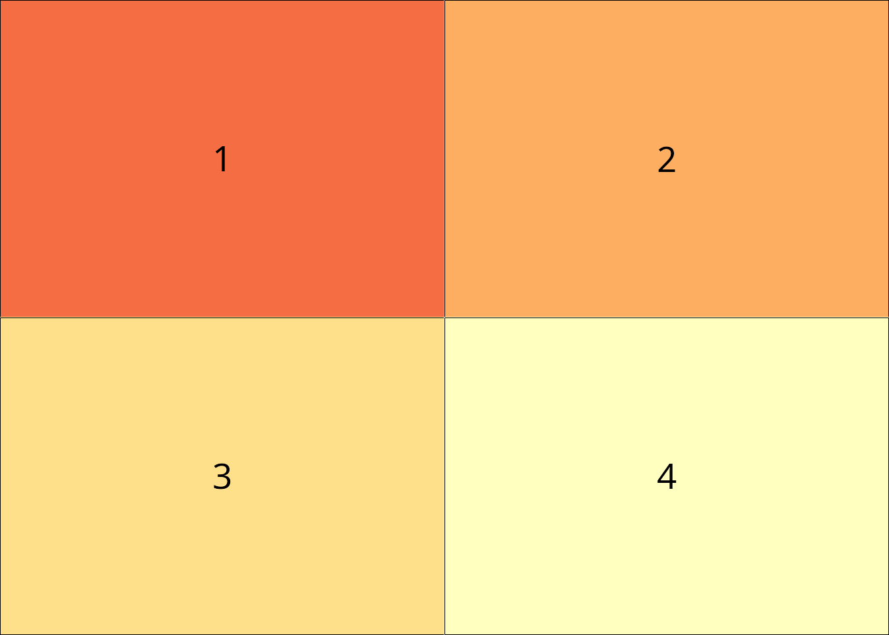

Complex Layouts
The packages differ more significantly when creating complex, non-uniform layouts.
Different Width Columns
Let’s create a layout where the left column is twice as wide as the right column.
customLayout
# Create two separate layouts and combine with width ratio
left <- lay_new(matrix(1:2, nrow = 2))
right <- lay_new(matrix(1:2, nrow = 2))
combined <- lay_bind_col(left, right, widths = c(2, 1))
lay_show(combined)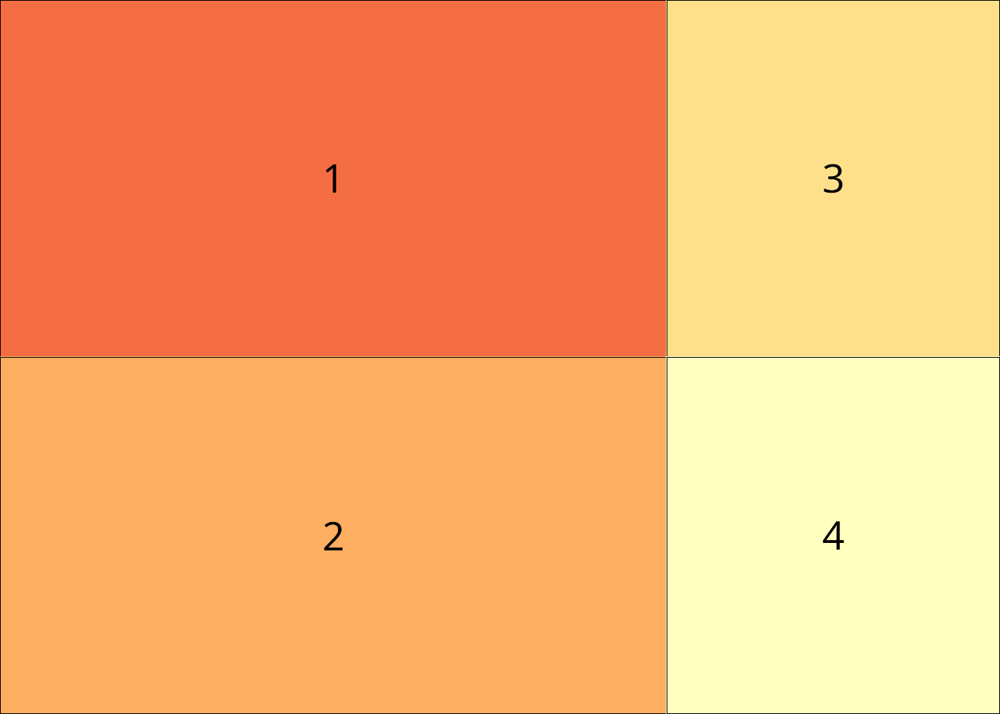
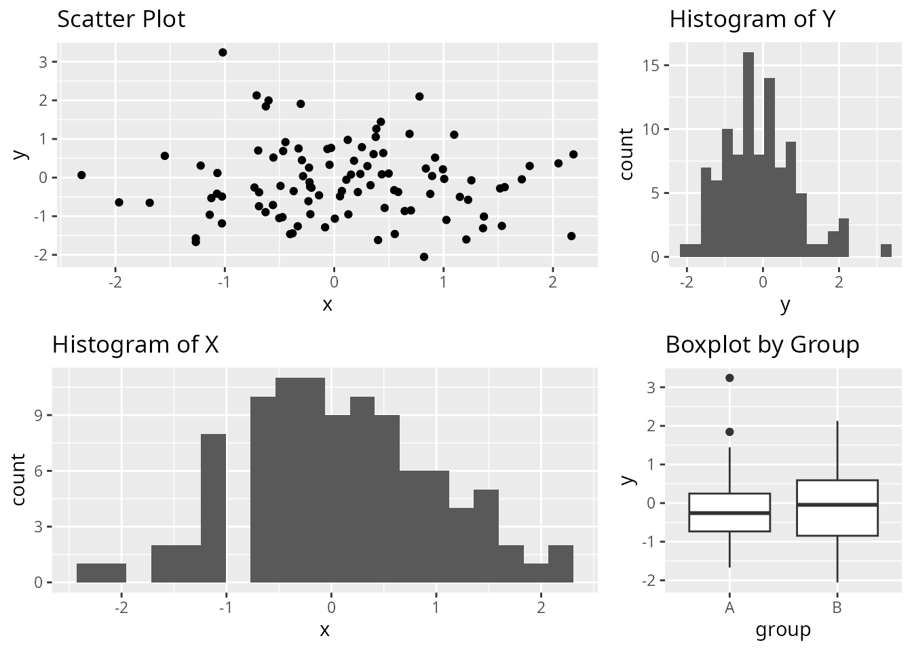
patchwork
# Use layout specification with widths
(p1 / p2) | (p3 / p4) + plot_layout(widths = c(2, 1))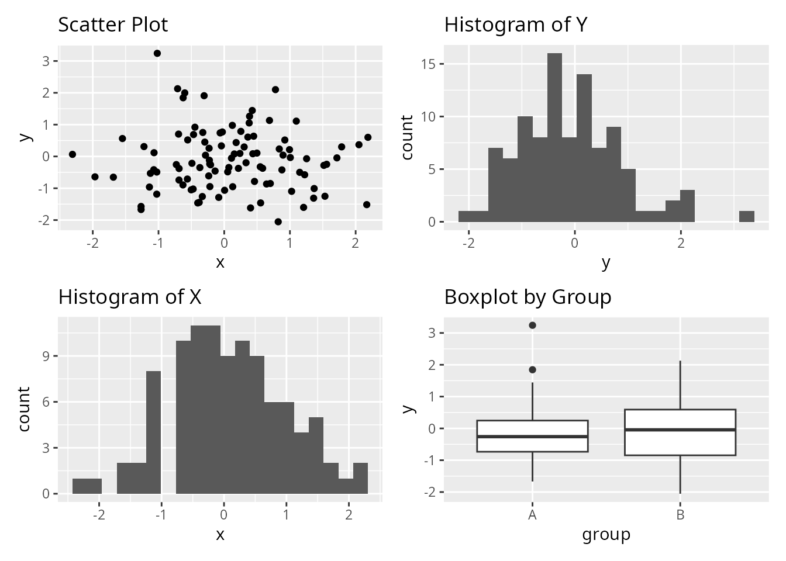
Nested Layouts
Create a layout with one large plot on the left and three smaller plots stacked on the right.
Unique Features
customLayout: Base Graphics Support
Unlike patchwork and cowplot, customLayout works with base R graphics. Here’s a complex layout with 8 different plot types arranged in a sophisticated structure.
# Create a complex layout:
# - Top row: one wide plot spanning 2 columns, one narrow plot
# - Middle row: 3 equal plots
# - Bottom row: 2 plots on left, one tall plot on right spanning middle+bottom
# Build the layout by combining simpler layouts
top_row <- lay_new(matrix(c(1, 1, 2), nrow = 1))
middle_row <- lay_new(matrix(1:3, nrow = 1))
bottom_left <- lay_new(matrix(1:2, nrow = 1))
# Combine middle and bottom rows, then split field for the tall right plot
main_area <- lay_bind_row(middle_row, bottom_left, heights = c(1, 1))
# Add a sidebar on the right for plots 6-8 stacked vertically
sidebar <- lay_new(matrix(1:3, nrow = 3))
combined <- lay_bind_col(main_area, sidebar, widths = c(3, 1))
# Add top row
final_layout <- lay_bind_row(top_row, combined, heights = c(1, 2))
lay_show(final_layout)
par(mar = c(3, 3, 2, 1))
lay_set(final_layout)
set.seed(123)
x <- rnorm(100)
y <- x + rnorm(100, sd = 0.5)
# Plot 1: Time series (wide)
plot(cumsum(rnorm(200)), type = "l", col = "steelblue", lwd = 2,
main = "Random Walk", xlab = "", ylab = "Value")
grid()
# Plot 2: Density plot (narrow)
plot(density(rnorm(500)), main = "Density", col = "darkgreen", lwd = 2)
polygon(density(rnorm(500)), col = rgb(0, 0.5, 0, 0.3))
# Plot 3: Scatter with regression
plot(x, y, pch = 19, col = rgb(0, 0, 1, 0.5), main = "Scatter + Regression")
abline(lm(y ~ x), col = "red", lwd = 2)
# Plot 4: Histogram
hist(rnorm(300), breaks = 25, col = "coral", border = "white", main = "Histogram")
# Plot 5: Boxplot comparison
boxplot(rnorm(50), rnorm(50, mean = 1), rnorm(50, mean = -0.5),
col = c("lightblue", "lightgreen", "lightyellow"),
names = c("A", "B", "C"), main = "Comparison")
# Plot 6: Bar plot
barplot(sort(table(sample(LETTERS[1:6], 100, replace = TRUE)), decreasing = TRUE),
col = rainbow(6), main = "Frequencies")
# Plot 7: Pie chart
pie(c(35, 25, 20, 15, 5), labels = c("A", "B", "C", "D", "E"),
col = heat.colors(5), main = "Proportions")
# Sidebar plots (8-10)
# Plot 8: ACF
acf(rnorm(100), main = "ACF")
# Plot 9: QQ plot
qqnorm(rnorm(100), main = "Q-Q Plot", pch = 19, col = "purple")
qqline(rnorm(100), col = "red", lwd = 2)
# Plot 10: Dot chart
dotchart(sort(setNames(sample(10:30, 5), LETTERS[1:5])),
pch = 19, color = "darkblue", main = "Dot Chart")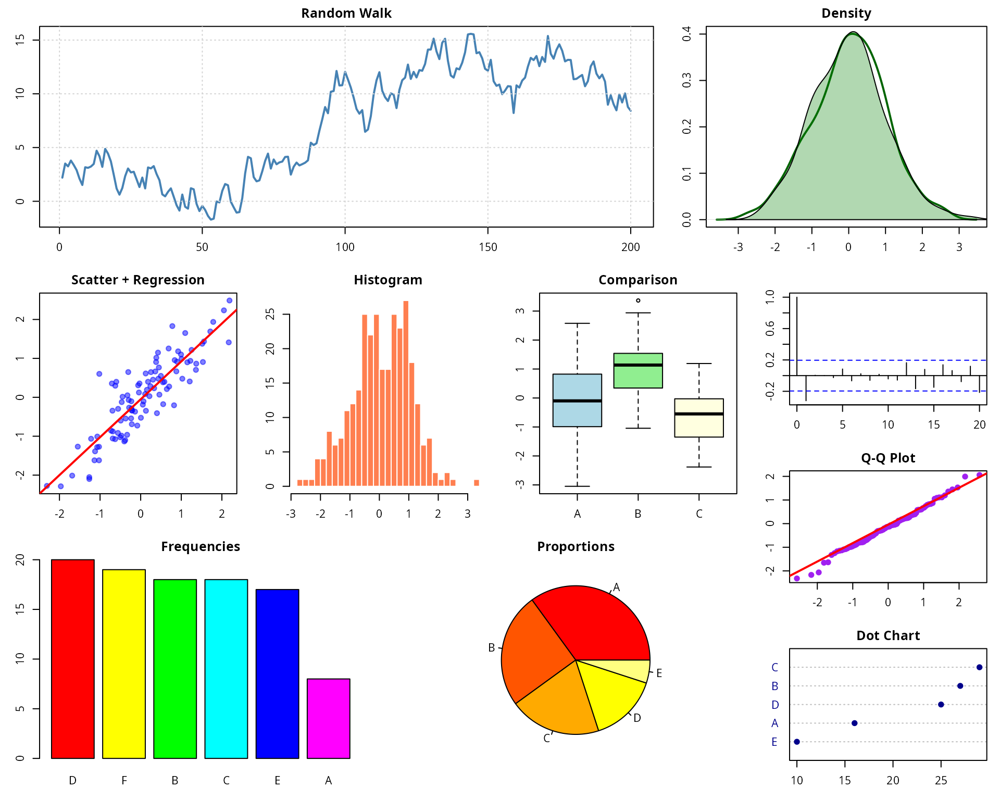
customLayout: PowerPoint Integration
customLayout can export layouts directly to PowerPoint slides via the
officer package.
library(officer)
# Create layout for PowerPoint
lay <- lay_new(matrix(1:2, nrow = 1))
olay <- phl_layout(lay)
# Create PowerPoint and add plots
pptx <- read_pptx()
pptx <- add_slide(pptx, layout = "Blank")
phl_with_gg(pptx, olay, 1, p1)
phl_with_gg(pptx, olay, 2, p2)
print(pptx, target = "my_presentation.pptx")customLayout: Layout Splitting
Split an existing field into a sub-layout while preserving aspect ratios.
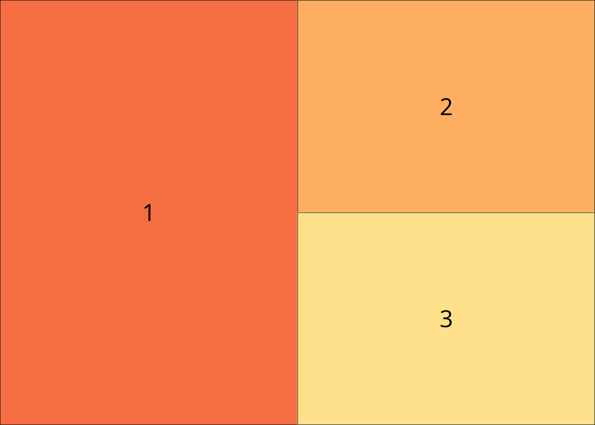
# Split field 1 into two parts
sub <- lay_new(matrix(1:2, ncol = 2))
split_layout <- lay_split_field(main, sub, field = 1)
lay_show(split_layout)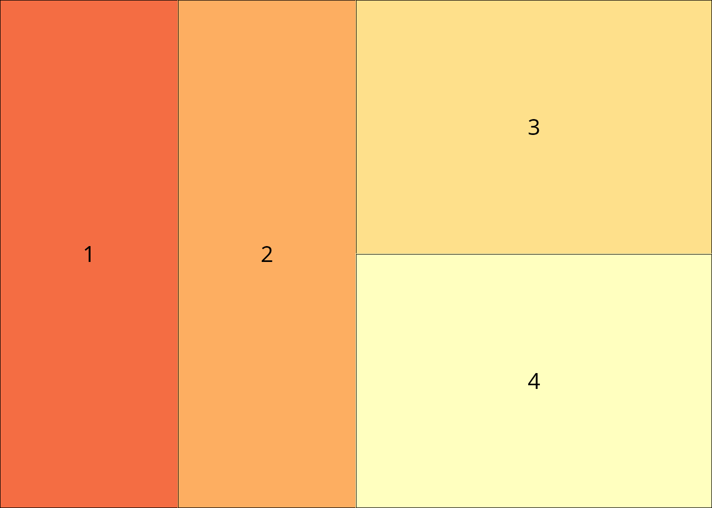
patchwork: Annotation and Tagging
patchwork excels at adding panel labels and collecting legends.
(p1 + p2) / (p3 + p4) +
plot_annotation(
title = "Combined Figure",
subtitle = "Four ggplot2 plots arranged in a grid",
tag_levels = "A"
)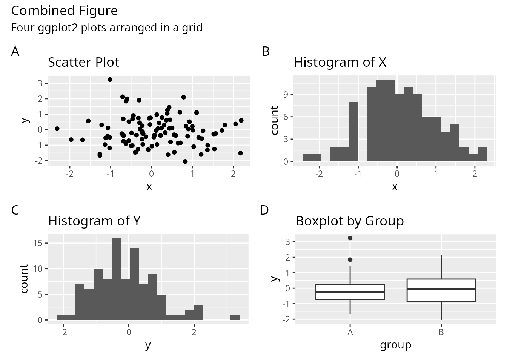
patchwork: Inset Plots
Easily add inset plots within other plots.
p1 + inset_element(p2, left = 0.6, bottom = 0.6, right = 1, top = 1)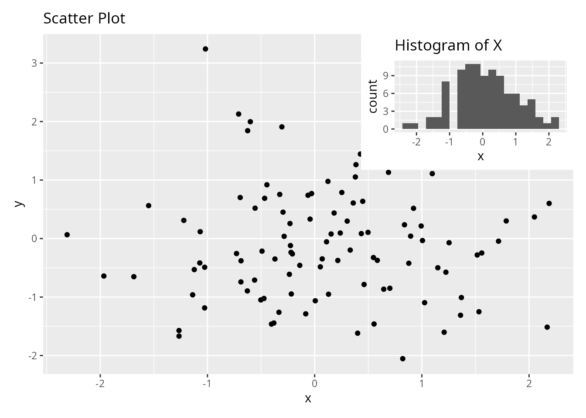
cowplot: Aligned Axes
cowplot provides precise control over axis alignment.
# Align axes across different plot types
plot_grid(p1, p2, p3, p4,
align = "hv", # Align both horizontally and vertically
axis = "tblr") # Align all axes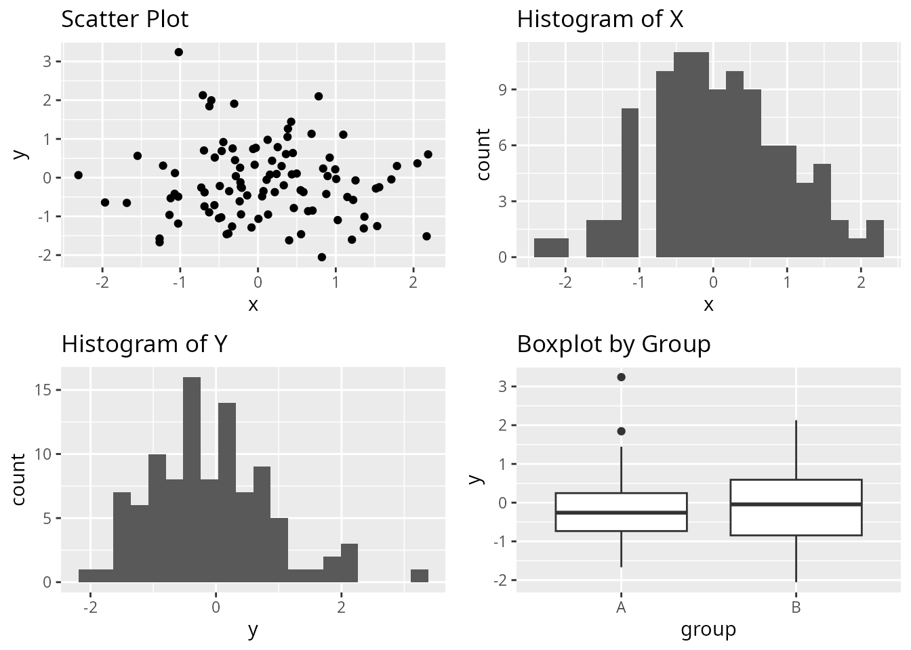

When to Use Each Package
Choose customLayout when:
- You need to work with base graphics (not just ggplot2)
- You want to export layouts to PowerPoint slides
- You prefer matrix-based layout specification
similar to base
layout() - You need to preserve aspect ratios when combining complex layouts
- You’re building layouts programmatically from matrices
Combining Packages
These packages are not mutually exclusive. You can combine them:
# Use patchwork to create a combined plot
combined_patchwork <- (p1 | p2) / (p3 | p4)
# Use cowplot to add it to a grid with labels
plot_grid(combined_patchwork,
labels = "AUTO",
label_size = 12)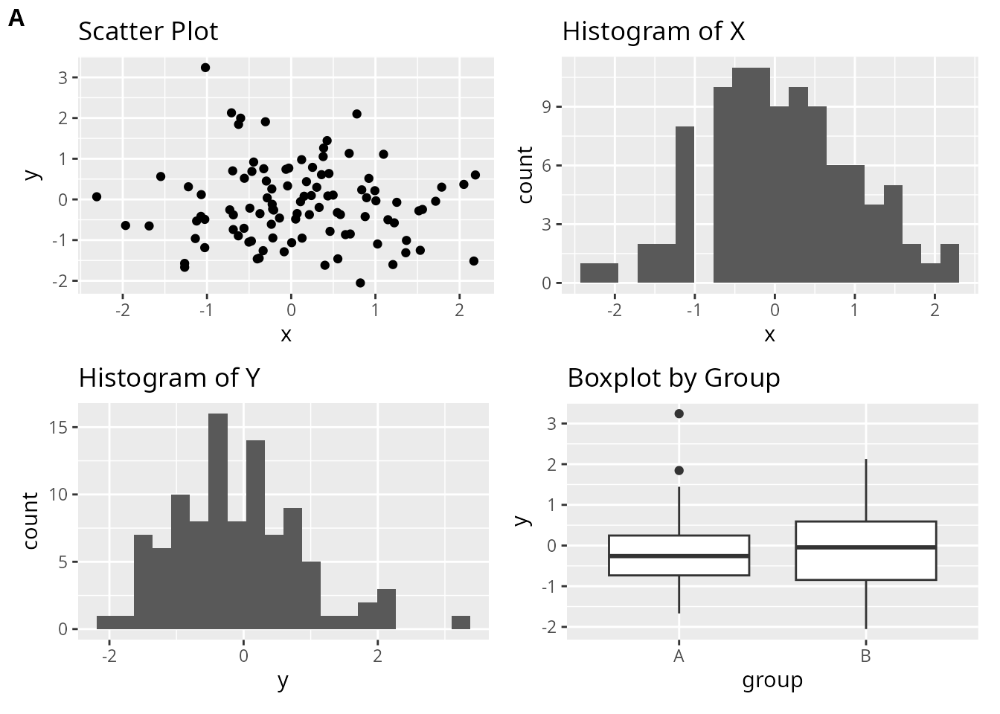
# Use cowplot's get_legend with customLayout
library(cowplot)
# Create plots with legends
p_legend <- ggplot(df, aes(x, y, color = group)) +
geom_point() +
theme(legend.position = "bottom")
# Extract legend using cowplot
legend <- get_legend(p_legend)
# Create layout with customLayout
lay <- lay_bind_row(
lay_new(matrix(1:2, nrow = 1)),
lay_new(1),
heights = c(4, 1)
)
# Combine plots and legend
plots_no_legend <- list(
p_legend + theme(legend.position = "none"),
p4,
legend
)
lay_grid(plots_no_legend, lay)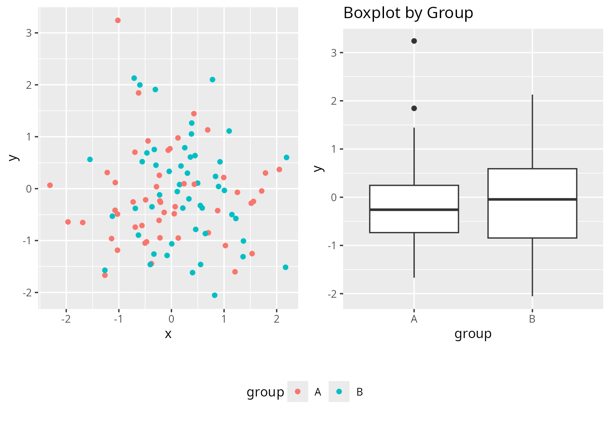
Conclusion
Each package offers a unique approach to combining plots in R:
- customLayout provides flexibility across graphics systems and PowerPoint integration
- patchwork offers the most intuitive syntax for ggplot2 users
- cowplot excels at publication-ready figures with precise alignment
Your choice depends on your specific needs: graphics system, output format, and preferred syntax style.